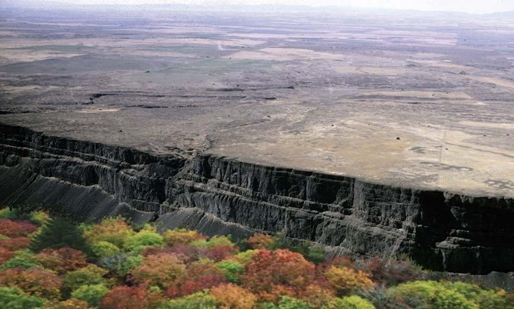

Umuhimu wa mabonde
Mabonde ni muhimu kwa sababu hukusanya maji kutoka kwenye milima na vilima. Hii inayafanya mabonde kuwa vyanzo vya maji. Sehemu zenye mabonde zilizo na maziwa, mito na mabwawa ni makazi ya viumbe wa majini wakiwemo samaki. Hivyo, sehemu hizi hutumika kwa shughuli za uvuvi. Pia, maeneo yenye mabonde ya mito huwa na udongo wenye rutuba hivyo hutumika katika shughuli za kilimo cha umwagiliaji. Vilevile, mito na mabwawa hutumika kuzalisha umeme. Aidha, maziwa na baadhi ya mito hutumika kwa usafiri wa vyombo vya majini kama vile meli na boti.
Uwanda wa Juu
Uwanda wa juu ni sehemu ya ardhi yenye mwinuko wenye umbo la tambarare. Kielelezo namba 7 kinawasilisha uwanda wa juu.
